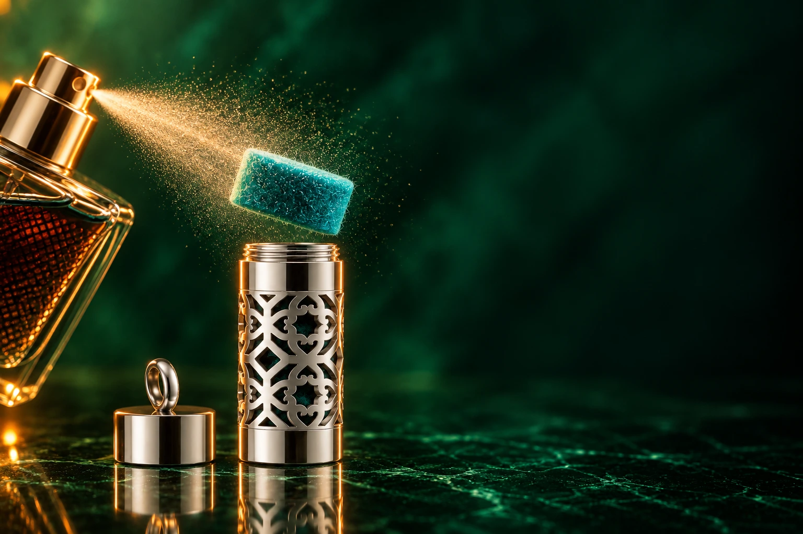
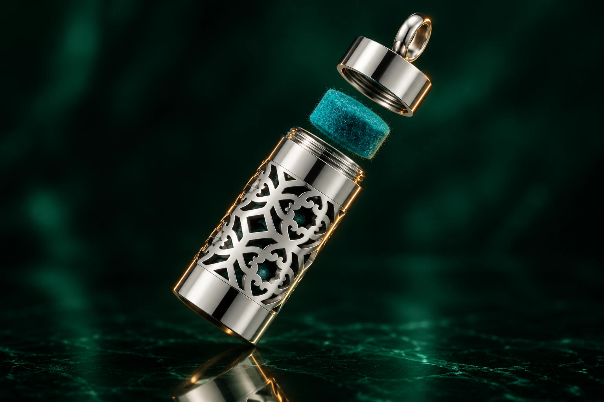
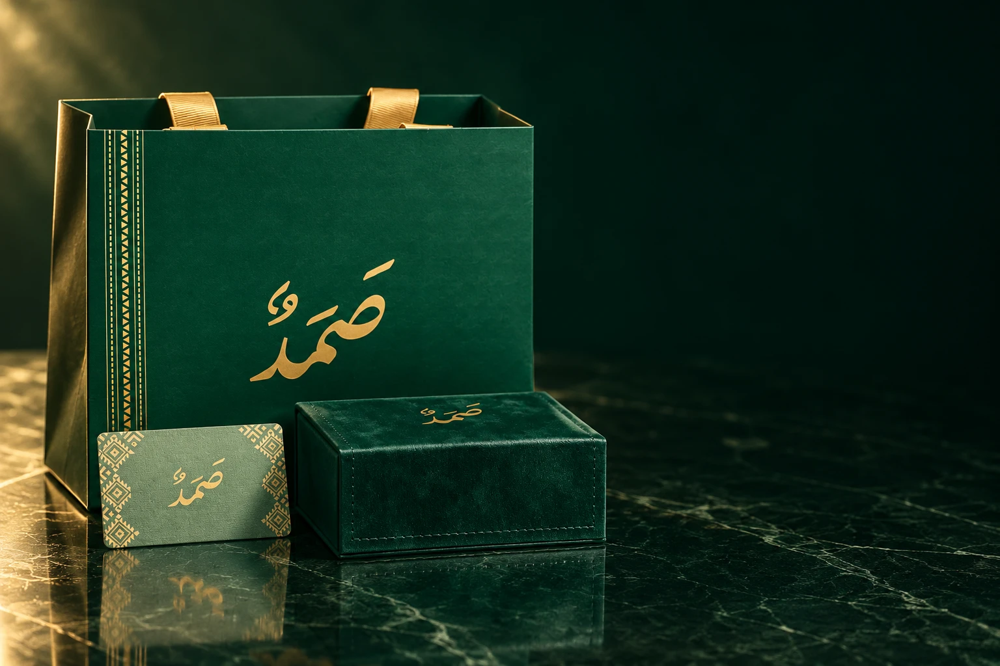

THE ART OF
PERSONAL RITUALSAMD / 01
PERSONAL RITUALSAMD / 01
01 / الفكرةMORE THAN AN OBJECT
بعض التفاصيل
لا تُرى.
ولكنّها تبقى.
✦
في صمد، يلتقي ملمس السبحة بأثر عطرك المفضّل. قطعة صغيرة، تصنع علاقة شخصية مع كل لحظة تحملها فيها.
لك. ولمن يحمل مكانة لديك.اقتَنِ تفصيلة تشبهك02 / سرّ صمدTHE SCENT CAPSULE

صغيرة بحجمها.
حاضرة بأثرها.
داخل هذه التفاصيل،
مساحة لعطرك أنت.
01
تُفتح بلفّة
غطاء قابل للفتح والإغلاق
02
تحتفظ بعطرك
قطعة لباد تضع عليها عطرك المفضّل
000°التمرير يحرّك التفاصيل
OPEN / SCENT / CLOSE
03 / بصمتكA COLOUR. A MOOD. YOU.
اختر لونك.
واترك أثرك.
شاهد لون اللباد مع الفوّاحة.
التفاصيل تشبهك.
فيروزياختر سبحتك
اختيار صغير، يشبهك.YOUR SIGNATURE / IN EVERY DETAIL
04 / طقس العطرMAKE IT YOURS
ثلاث خطوات.
وأثر يرافقك.
طقس بسيط، تصبح بعده
السبحة أقرب إليك.

01 / 03تمرّ اللحظة.
ويبقى الأثر.

05 / فنّ الإهداءA GIFT WITH MEANING
لمن يستحق التفاصيلبعض الهدايا
بعض الهدايا
تشبه أصحابها.
سبحة، فوّاحة، وتغليف صمد.
تفاصيل تجتمع لتقول أكثر.
من اختيارك، إلى يديه.THE SAMD GIFT EXPERIENCE
رسالة تُكتشف بلمسةA PERSONAL CONNECTION
9:41
هدية تحمل
أكثر من معنى.
أكثر من معنى.
بطاقة صمدرسالة بانتظاركالمس لفتح الإهداء ↗
NFC
اقلب البطاقة.
وافتح قلب الهدية.
قرّب بطاقة صمد من الهاتف، افتح الإشعار، واكتشف رسالة كُتبت لك.
١. قرّب٢. افتح٣. اكتشف
اختر هدية برسالتكعرض توضيحي للتجربة · قد تختلف طريقة القراءة حسب الهاتف.